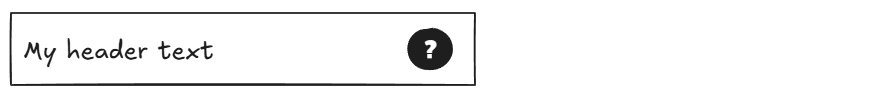

Creating a Custom Control
Introduction
Unity's UI Toolkit allows you to build your own reusable UI controls - known as Controls - that go beyond simple UXML templates by including actual behaviour, much like controls in React.js.
You can create these controls either by starting in the UI Builder or by copying an existing control. When using the UI Builder, a few extra setup steps are required before the control is ready to publish. These are explained in their own guide on using UI Builder.
Also, when you want to use other custom controls inside the UI Builder, make sure to select them from the “Custom Controls (C#)” section in the Project panel, rather than from the UXML documents listed under “UI Documents (UXML)”, to ensure the correct version of the control is used.
Goal
This guide consists of the following parts:
Through this structure it is expected that you can either reference the specific section when you want to accomplish one of these.
In the end, we want to end up with a control that can be included like this:
<nl3d:Header
title="My header text"
help-url="https://netherlands3d.eu/docs/my-help-topic"
/>
and looks like this:

Prerequisites
- You have a basic understanding of UI Toolkit, especially the roles of the UXML and USS files, and recognize at least terms like "attribute", "element", "class", "selector" and others denoting important parts.
- It is recommended to watch this YouTube playlist
- Familiarity with how HTML and CSS works is helpful
- Familiarity with React.js' Components is helpful
1. Setup a simple presentational control
This example shows how to create a minimal “Header” control that has layout and minimal styling.
A Component always consists of three parts:
- The Component's logic as a C# class extending the
VisualElementclass of Unity - The UI's layout as UXML - this is similar to how HTML works on web.
- The styling declaration as USS - this is similar to how CSS works on web.
The layout and styling are static declarations that together form the presentation of the control, where the C# code provide behaviour and integration points for the control.
1.1. Make the control in C#
Minimal implementation:
File: Assets/UI Toolkit/Scripts/Components/Header.cs
using Netherlands3D.UI_Toolkit.Scripts;
using Netherlands3D.UI.ExtensionMethods;
using UnityEngine.UIElements;
namespace Netherlands3D.UI.Components
{
[UxmlElement]
public partial class Header : VisualElement
{
public Header()
{
this.CloneComponentTree("Components");
this.AddComponentStylesheet("Components");
}
}
}
CloneComponentTree and AddComponentStylesheet automatically connect the UXML and USS files located in the
Components subfolder of the shared UI Resources directory.
They are Netherlands3D helper methods that:
- Centralize resource loading paths
- Wrap Unity’s default API
- Add small guardrails
1.2. Make the layout template (UXML)
File: Assets/UI Toolkit/Resources/UI/Components/Header.uxml
<ui:UXML
xmlns:xsi="http://www.w3.org/2001/XMLSchema-instance"
xmlns:ui="UnityEngine.UIElements"
noNamespaceSchemaLocation="../../../../UIElementsSchema/UIElements.xsd"
xmlns:nl3d="Netherlands3D.UI.Components"
editor-extension-mode="False"
class="header"
>
<!-- We will add content here later -->
</ui:UXML>
Do note the class attribute with the value header on the UXML tag. The class header will be used in the
stylesheet to apply styling to this element.
Tip
The xmlns:nl3d namespace lets you reference Netherlands3D controls without writing their full C# namespace, this
is demonstrated below when we add a label and icon.
1.3. Make the styling (USS)
Example header bar: full‑width, automatic height, horizontal layout with spaced content.
File: Assets/UI Toolkit/Resources/UI/Components/Header-style.uss
.header {
/* Display contents horizontally (row) */
flex-direction: row;
/* Prevent this header from growing vertically */
flex-grow: 0;
/* Allow shrink‑to‑fit based on content */
flex-shrink: 1;
/* Spread child elements horizontally */
justify-content: space-between;
/* Use theme's white color */
background-color: var(--color-white);
/* Add padding for some whitespace, spacing-2 is half the reference size of 16px - thus 8px */
padding: var(--spacing-2);
}
Warning
USS filenames for Custom Controls must end with -style.uss.
Unity may get confused if a USS file and a UXML their names differ only by extension.
In the code above, it is stated that any element with the class header (see the chapter on
making the template where this is introduced in your layout) will
- have a fixed background color that matches the white color of the theme using a USS variable.
- will have its child elements layed out in a row -horizontally- and ensures the whole width is used by spacing child elements
- It will allow the containing element to shrink the element's height to match the contents of this element
(
flex-shrink) and prevents this element from growing to match the containers desired height (flex-grow).
2. Adding Content
For our header, let's assume it should have
- a label on the left, and
- a help icon button on the right.
In the chapter where we made the template we left off with the following template file:
<ui:UXML
xmlns:xsi="http://www.w3.org/2001/XMLSchema-instance"
xmlns:ui="UnityEngine.UIElements"
noNamespaceSchemaLocation="../../../../UIElementsSchema/UIElements.xsd"
xmlns:nl3d="Netherlands3D.UI.Components"
editor-extension-mode="False"
class="header"
>
<!-- We will add content here later -->
</ui:UXML>
Let's expand on that.
2.1. Adding a title
Unity has a label control that does nothing more than display text. This sounds like a perfect candidate for our header's label.
It looks like this:
<ui:Label name="..." class="..." text="Default text" />
Two important attributes here are name and class.
- The
nameshould be a unique name for that element within your control, but you can also omit if it is not needed. - The
classattribute is used for styling (see the earlier chapter on styling) and that will be used to make sure the label will have the right look and feel for this control.
Let's omit the name for now, and add a class named header-title.
Important
Because class names are global for the whole application, it is required to make sure each class specific to a control is prefixed with the name of that control, then a hyphen and the role it plays - or class - in this control.
Our contents now look like this:
<ui:Label class="header-title" text="Default text" />
Let's add it into our template:
<ui:UXML
xmlns:xsi="http://www.w3.org/2001/XMLSchema-instance"
xmlns:ui="UnityEngine.UIElements"
noNamespaceSchemaLocation="../../../../UIElementsSchema/UIElements.xsd"
xmlns:nl3d="Netherlands3D.UI.Components"
editor-extension-mode="False"
class="header"
>
<!-- Here comes the label - as a child of the UXML element. -->
<!-- Note that we removed the text as well, we are going to set that
using the control's logic -->
<ui:Label class="header-title" />
</ui:UXML>
This is a good first step, but next: let's style it and set the label text using an attribute on our header.
2.2. Styling the title
In the chapter where we setup our styling, we introduced the style for the header itself. Now we need to add a bit of styling to make sure the header's title has the correct text size.
The header already has all the basic styling needed to position the title correctly, so we can focus on the title itself.
.header-title {
-unity-font-style: bold;
font-size: var(--font-size-xl);
}
See https://docs.unity3d.com/6000.3/Documentation/Manual/UIB-styling-ui-text.html for the Unity information on styling text.
Again, we use USS variables to say: this text should be extra-large! By using these variables we can easily change the theme later on, or provide variants for accessibility.
2.3. Adding the Help Button
The header also contains a help icon on the right. Netherlands3D provides a reusable control for this: HelpButton. It
displays a standardized help icon and opens a URL when clicked.
Because this is a full custom control with its own layout and styling, no additional USS rules are required — it will automatically use its built‑in appearance and behaviour.
The basic usage looks like this:
<nl3d:HelpButton name="HelpButton" />
Just as with the title label, the name attribute is optional, but in this case we will use it so our Header logic
can easily find the element and configure its URL.
Let’s add it below the title label:
<ui:UXML
xmlns:xsi="http://www.w3.org/2001/XMLSchema-instance"
xmlns:ui="UnityEngine.UIElements"
noNamespaceSchemaLocation="../../../../UIElementsSchema/UIElements.xsd"
xmlns:nl3d="Netherlands3D.UI.Components"
editor-extension-mode="False"
class="header"
>
<!-- Left-aligned title -->
<ui:Label class="header-title" />
<!-- Right-aligned help icon -->
<nl3d:HelpButton name="HelpButton" />
</ui:UXML>
Because the header itself uses horizontal flex layout (flex-direction: row; justify-content: space-between;), this
naturally places the title on the left and the help icon on the right.
3. Configuring a Control Using Attributes
Now that the Header control has layout and styling, we want to make it configurable from UXML—just like built‑in UI elements.
UI authors should be able to write:
<nl3d:Header
title="My Header"
help-url="https://netherlands3d.eu/docs/my-topic"
/>
To achieve this, we expose UXML attributes using the UxmlAttribute annotation. This is the simplest and most
readable way to map values from UXML into a custom control.
In this chapter we implement the two attributes one at a time:
titlehelp-url
3.1. Preparing the Header Logic
Before attributes can be applied, we need references to the internal elements we added in earlier chapters—the label and the help button.
using Netherlands3D.UI_Toolkit.Scripts;
using Netherlands3D.UI.Components;
using Netherlands3D.UI.ExtensionMethods;
using UnityEngine.UIElements;
namespace Netherlands3D.UI.Components
{
[UxmlElement]
public partial class Header : VisualElement
{
private Label titleLabel;
private HelpButton helpButton;
public Header()
{
this.CloneComponentTree("Components");
this.AddComponentStylesheet("Components");
// demonstrate getting a control by their class attribute
titleLabel = this.Q<Label>(className: "header-title");
// demonstrate getting a control by their name attribute
helpButton = this.Q<HelpButton>("help");
}
}
}
With these references in place, we can now configure them from UXML.
3.2. Adding the title Attribute
We begin with the simplest attribute: controlling the text of the header title.
Add the public property
We expose a property that sets the text of the internal label:
public string Title
{
get => titleLabel.text;
set => titleLabel.text = value;
}
Mark it as a UXML attribute
By adding the UxmlAttribute annotation, Unity automatically makes this property available in UXML:
[UxmlAttribute]
public string Title [...]
…but we also want to apply its value to the internal label when Unity instantiates the control.
So the final combined version becomes:
[UxmlAttribute]
public string Title
{
get => titleLabel.text;
set => titleLabel.text = value;
}
No extra boilerplate. No backing field. Unity handles everything under the hood.
Using the attribute in UXML
Your header now supports:
<nl3d:Header title="My Header Title" />
This will set the label text automatically when the UI loads.
3.3. Adding the help-url Attribute
Next, we make it possible to configure the HelpButton’s URL from UXML.
Add the forwarding property
Our HelpButton exposes some property like Url or HelpUrl. We forward that through our header control:
public string HelpUrl
{
get => helpButton.HelpUrl;
set => helpButton.HelpUrl = value;
}
Mark it as a UXML attribute
Just like with the title:
[UxmlAttribute]
public string HelpUrl
{
get => helpButton.HelpUrl;
set => helpButton.HelpUrl = value;
}
Unity will now inject the UXML attribute value automatically when the control is created.
Using the attribute in UXML
Your header now supports:
<nl3d:Header
help-url="https://netherlands3d.eu/docs/getting-started"
/>
The HelpButton will open the correct documentation page when clicked.
Best practices
- Use USS variables for colors,
spacing, and text styles. These are defined in:
Assets/UI Toolkit/Resources/UI/_Theme.uss - Do not use magic numbers, especially for spacing. Check the theme for a list of available variables.
- Use the
nameattribute for look-ups, not for styling - Use the
classattribute for styling, not for look-ups